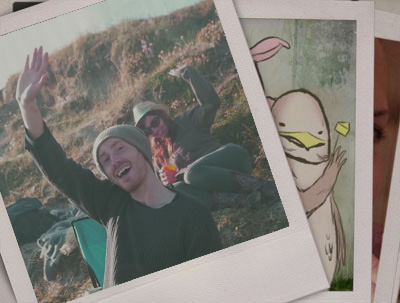

cerealtom.com

Tom Moore is a Dublin born artist whose work involves illustration in different media, including traditional print making practices and animation. He studied at the National College of Art & Design specialising in printmaking and has exhibited in numerous group exhibitions, including the annual RHA Graduate show in 2006, and several exhibitions with the Black Church Print Studio.
In 2010 he completed a large body of work for the Gibson Hotel in Dublin, and is currently working with Digital Furnace Games on their game, Onikira.
exhibitions
2014
- Summer Members Exhbition 2014, London Print Studio.
- Brainbelt at JDIFF, Filmbase, Temple Bar, Dublin.
2013
- Proof It, The Library Project, Dublin.
- Circulation, FLOOD, James Joyce Street, Dublin.
- An Exquisite Corpse, Curiosity Cabinet, Temple Bar, Dublin
- Generator, In-Spire Gallery, Gardiner Street, Dublin.
2012
- Production, Monster Truck, Temple Bar, Dublin.
2011
- Krucifix, Curiosity Cabinet, Temple Bar, Dublin.
- ART SWAP, Little Green Street Gallery, Dublin.
- BOXiD Round III, No Grants Gallery, Temple Bar, Dublin.
2009
- The Dog Show, Gallery Grangie, Lennox Street, Richmond, Melbourne.
- Unfinished Business, Sycamore Gallery, Sycamore Street, Temple Bar, Dublin.
2008
- Good on Paper, Stone Gallery, Pearse Street, Dublin.
- Node, National Print Studio Network Exhibition, Original Print Gallery, Temple Bar, Dublin.
2007
- Still Moving, Samhlaíocht Kerry Film Festival, The Round Gallery, Siamsa Tire, Tralee, Co. Kerry.
- Order and Chaos, The LAB, Foley Street, Dublin.
- Hung, Drawn & Quartered, Carlinn Gallery, Dundalk Street, Carlingford, Co. Louth.
- I Hate Myself and Want to Die - a Tribute to Kurt, Lower Ormond Quay, Dublin.
- Hung, Drawn & Quartered, Original Print Gallery, Temple Bar, Dublin.
- See Figure.8, Talbot Gallery, Talbot Street, Dublin.
2006
- It is a Kind of Magic, RHA Ashford Gallery, Dublin.
- Selected Works, Original Print Gallery, Temple Bar, Dublin.
- NCAD Graduate Show, 100 Thomas Street, Dublin.
2005
- The Fantastic Mister Tom plus thirteen others, Cross Gallery, Francis Street, Dublin.
- Der Defastenkunstbunker, Convergence Centre, Temple Bar, Dublin.
- RDS Student Art Awards, RDS, Dublin.
2004
- REJOYCE 100, National Print Museum, Garrison Chapel, Beggars Bush, Dublin.


Contact:tom@cerealtom.com
All contents © Tom Moore 2014